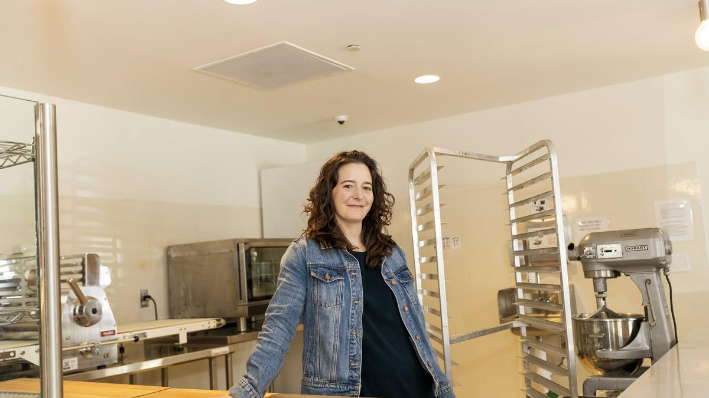
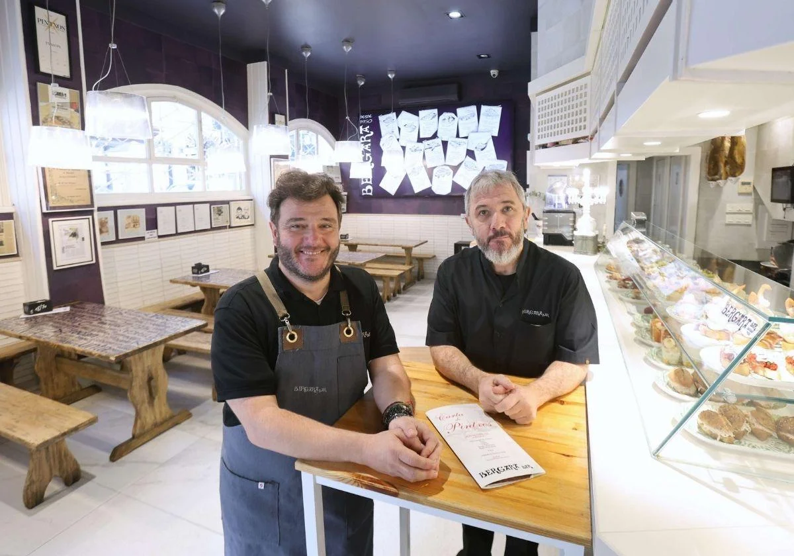

Noticias HORECA
El Gobierno aprueba la tramitación urgente del refuerzo del control horario
El Gobierno impulsa nuevas medidas para garantizar el registro de la jornada laboral y evitar fraudes en el control horario.

Leer más
Leticia Landa gana el Basque Culinary World Prize 2025
La mexicana Leticia Landa ha sido galardonada por su labor de empoderamiento femenino y desarrollo social a través de la gastronomía.

Leer más
El bar Bergara, templo del pintxo, celebra su 75 aniversario
El emblemático bar donostiarra cumple 75 años siendo un referente gastronómico de los pintxos tradicionales y modernos.